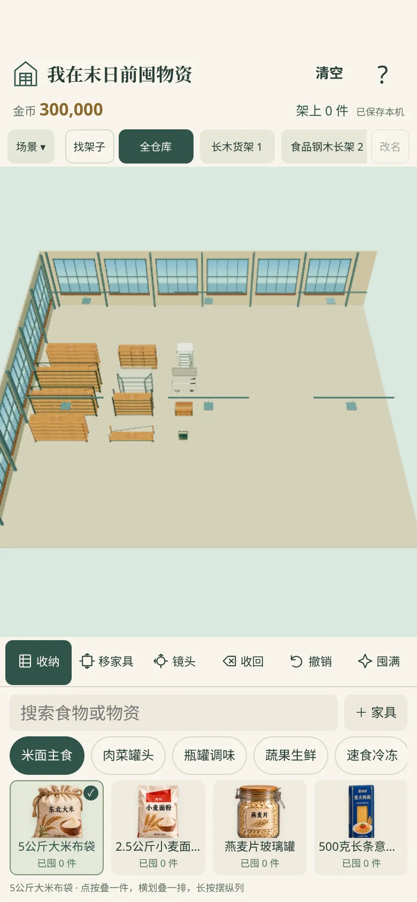

# 我在末日前囤物资 v0.12.0
取消商店和购买，直接自由囤物资。邻居采购随机弹出，无手动来客入口；黄色订单卡片、一屏报价，批量20–200件，明确总价，成交才取货并入账。
启动模拟：同一Linux Chromium、390×844、冷缓存、3Mbps/100ms/CPU降速4倍、SwiftShader。无传输压缩中位数 8059 → 5763 ms；gzip传输中位数 5642 → 4268 ms。均不等于真实手机或小红书启动耗时。网站CDN响应、手机性能和首次容器下载会影响结果，不能保证所有手机3–5秒。
最终ZIP：2,534,212 bytes，25文件；SHA-256：5bbde644c1b57759fcffe935b443a72fd6dd3aab0f53d7c34b69cf47474d7a59。
官方静态审计：0错误、1条体积建议提醒（2.42MiB超过2MiB建议，低于10MiB硬上限）。34条规则、3条存档桥接、31项网页/离线流程、7项最终ZIP CSP代码调试通过。
使用 minitool-zip-builder 1.8.0，在线契约HTTP403，未完成在线核验。
普通浏览器仅用于代码调试，不能作为小红书容器验收。在线规范HTTP403，使用官方skill随包基线，未完成在线核验。待用同一ZIP完成创服平台模拟器、Android扫码和iOS扫码验证；Chrome61 CSS、真实手机启动时间及扬声器音效待实测。